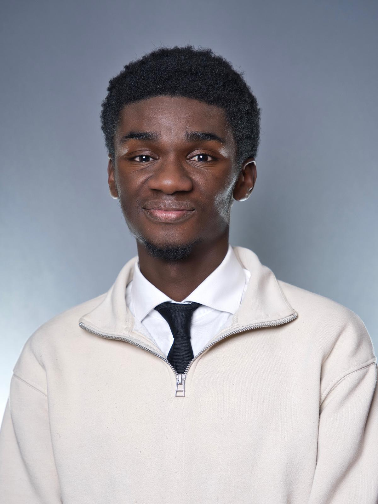

About Me

My name is Caleb Agyei, i'm a 23 year old aspiring cybersecuirty Professional currently studying at Ontario Tech University.
Besides a love for solving technical problems, I also enjoy staying active through sports like basketball, soccer, and tennis. I enjoy cooking and playing the piano too!
My career goal is to continue building my technical and communication skills and pursue opportunities in areas such as cybersecurity with a focus on IT governance risk and compliance, technical consulting, and solutions engineering.